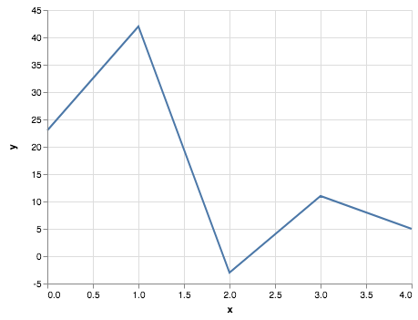

Questo post è parte del programma di tutoraggio per Fondamenti di Programmazione, DEMACS, University of Calabria.
Si vuole creare un programmino in C++ per generare, manipolare e analizzare delle serie temporali (time series). Una serie temporale può essere espressa come una sequenza di punti in uno spazio 2D. Per esempio, la seguente sequenza
(0,23), (1,42), (2,-3), (3,11), (4,5)
rappresenta una serie temporale di 5 osservazioni (dall’istante temporale 0 all’istante temporale 4). La sua rappresentazione visuale è la seguente:

Il programmino deve permettere di:
- creare e manipolare dei punti in 2D,
- creare e manipolare una serie temporale,
- effettuare diverse analisi su di una serie temporale.
L’implementazione è distinta in diverse parti (da fare insieme a tutoraggio oppure da soli) e non tutte le parti sono attualmente disponibili. Saranno disponibili man mano durante gli incontri di tutoring.
Parte 1: la classe Point2D.h
La classe Punto2D.h modella un punto in 2D. Nello specifico, un punto p è rappresentato da due coordinate (x,y). Nella implementazione da effettuare, x è una coordinata intera, mentre y può essere definita come intera (int) o razionale (float o double).
In particolare, la classe deve prevedere le seguenti funzionalità:
- Istanziare un punto 2D (in
(0,0)oppure con le coordinate fornite dall’utente), - Copiare un punto 2D a partire da un altro punto 2D,
- Verificare se due punti 2D sono uguali o diversi,
- Effettuare la somma di due punti 2D (dove la somma è definita come la somma delle rispettive componenti),
- Effettuare la differenza di due punti 2D (dove la differenza è definita come la differenza delle rispettive componenti),
- Accedere a e modificare le componenti
xey, - Una funzione definita come
friendche permetta di stampare un punto su standard output (i.e.,cout).
Parte 2: la classe TimeSeries.h
La classe TimeSeries.h rappresenta una serie temporale (nell’accezione data poco sopra). In particolare, la classe deve contenere una serie di punti contigui e deve dare la possibilità di aggiungerne di nuovi o rimuoverli. Attenzione: la contiguità deve essere sempre mantenuta. Con contiguità si intende che, dati due punti in posizione i e i+1 con coordinate (a,b), (c,d), essi sono contigui se e solo se c = a+1.
Esempio di serie temporale corretta (la contiguità è mantenuta):
(0, 3), (1, 4), (2, 2), (3, -2), (4, -6)
Esempio di serie temporale non corretta (la contiguità non è mantenuta):
(0, 3), (1, 4), (3, 5), (4, -2), (5, -6)
La classe deve prevedere le seguenti funzionalità:
- Creazione di una serie temporale vuota,
- Creazione di una serie temporale a partire da un array di punti 2D,
- Copiare una serie temporale a partire da un’altra serie temporale,
- Verificare se la contiguità di una serie temporale è mantenuta o meno,
- Verificare se due serie temporali sono uguali o differenti (due serie temporali sono uguali se contengono gli stessi punti 2D nello stesso ordine),
- Aggiungere un punto 2D in coda ad una serie temporale,
- Rimuovere un punto 2D in coda ad una serie temporale,
- Rimuovere un punto 2D in testa alla serie temporale (e traslare tutti i punti a sinistra).